Студия перманентного макияжа
Пудровые губы - новинка в сфере перманентного макияжа «Пудровые» губы или иначе «акварельная»,
бесконтурная техника перманентного макижа губ - подходит тем клиентам, которые хотят натурального эффекта,
но контура с растушевкой им недостаточно из-за слишком бледного или синюшного цвета собственных губ.
Акварельное заполнение создает очень нежный и естественный образ, так как татуаж выполняется без четкого контура,
а оттенок пигмента и цвет губ мягко смешиваются между собой.
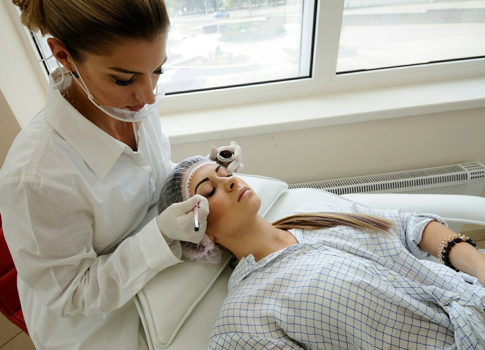
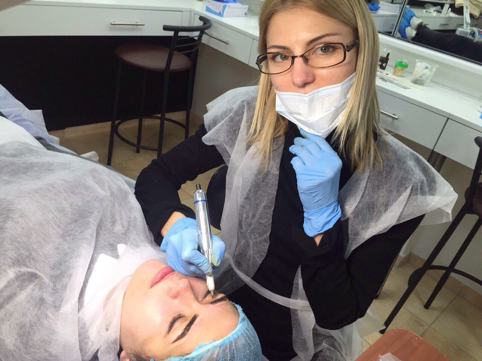
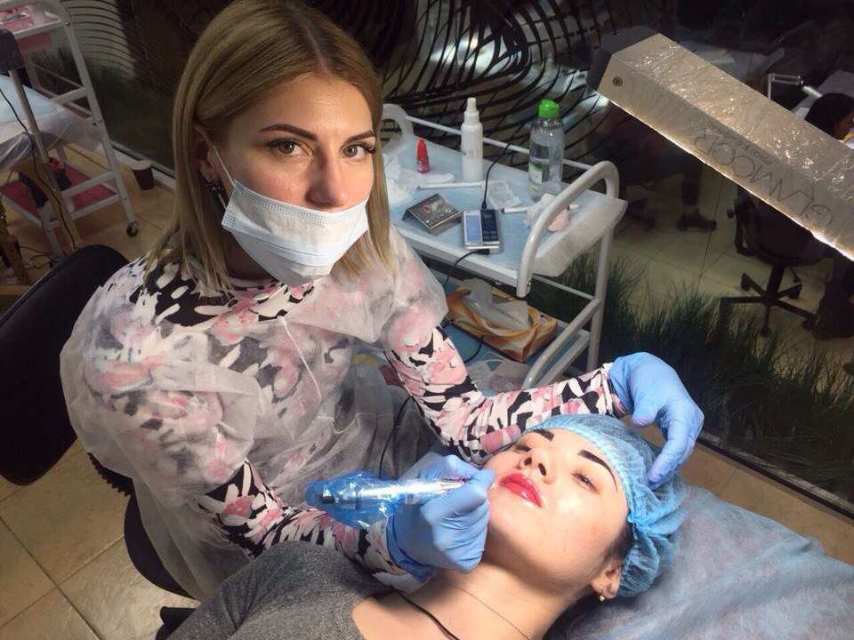
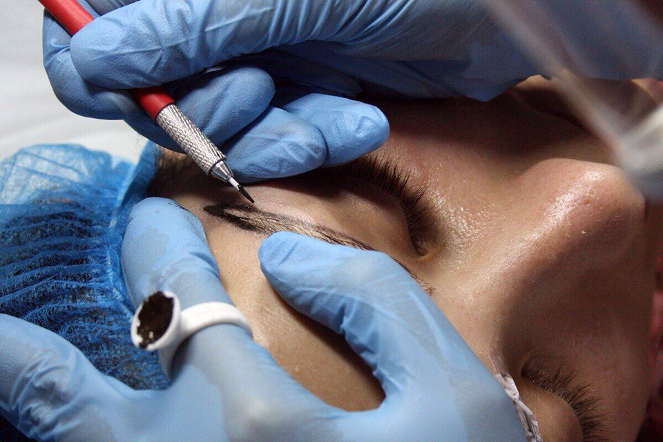
Преимущества ПУДРОВОГО НАПЫЛЕНИЯ БРОВЕЙ для клиента:
- Из-за небольшой глубины внедрения пигмента, оттенок пигмента в результате остается максимально натуральным.
- Вам не нужно предугадывать, каким станет цвет бровей после заживления – он абсолютно не изменится.
- Благодаря этой технике сомневающиеся клиенты брови «примерить» на один, два или три месяца. А когда результат будет оценен по достоинству, просто зафиксировать его на 1-2 года.
- Наши клиенты сравнивают пудровые брови с эффектом обычного окрашивания, проявляющимся на третий день – нежно, натурально, ухожено.
- По времени процедура также аналогична простому окрашиванию бровей. Но результат татуажа сохраняется от года до двух (в зависимости от особенностей кожи).
- Не имеет значения, блондинка вы или шатенка — результат будет без малейшего намека на ненатуральность.
- Вы не испытываете ни малейшего дискомфорта!
- Процедура с отрисовкой эскиза длится не более 50 минут.
- Постпроцедурный уход абсолютно стандартен
- Из-за небольшой глубины внедрения пигмента, оттенок пигмента в результате остается максимально натуральным.
- Вам не нужно предугадывать, каким станет цвет бровей после заживления – он абсолютно не изменится.
- Благодаря этой технике сомневающиеся клиенты брови «примерить» на один, два или три месяца. А когда результат будет оценен по достоинству, просто зафиксировать его на 1-2 года.
- Наши клиенты сравнивают пудровые брови с эффектом обычного окрашивания, проявляющимся на третий день – нежно, натурально, ухожено.
- По времени процедура также аналогична простому окрашиванию бровей. Но результат татуажа сохраняется от года до двух (в зависимости от особенностей кожи).
- Не имеет значения, блондинка вы или шатенка — результат будет без малейшего намека на ненатуральность.
- Вы не испытываете ни малейшего дискомфорта!
- Процедура с отрисовкой эскиза длится не более 50 минут.
- Постпроцедурный уход абсолютно стандартен
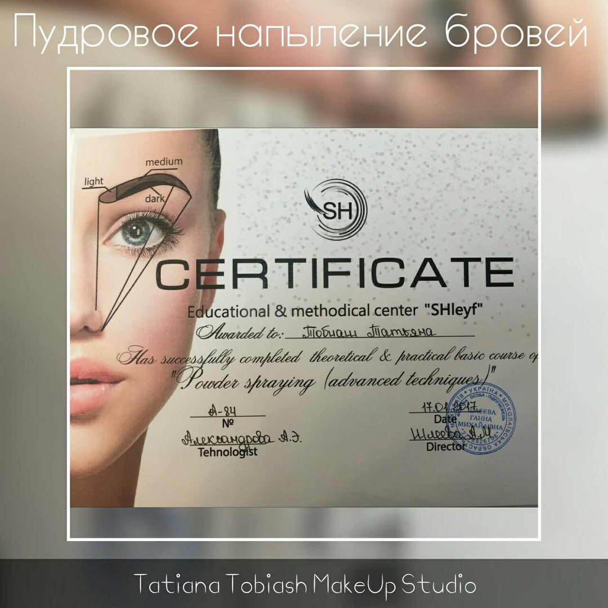
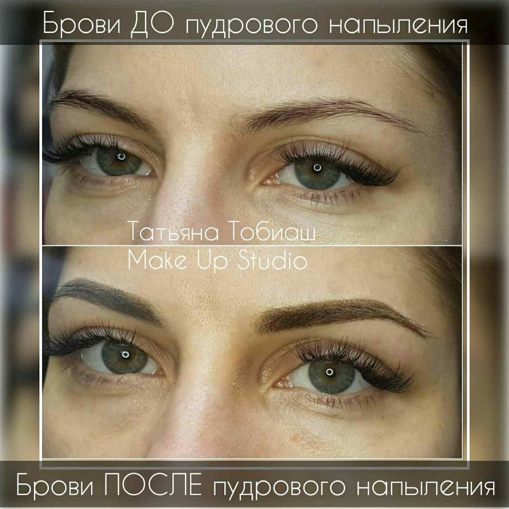
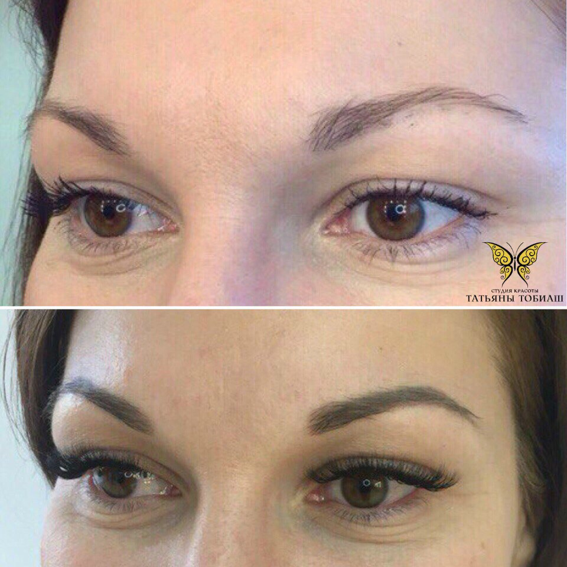
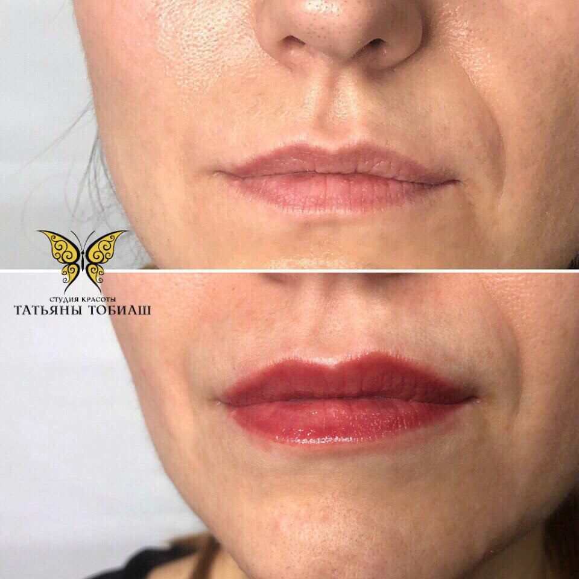
Профессиональные пигменты для пудрового напыление WizArt производства США
Сегодня в моде естественная красота и натуральность. Усовершенствованная техника перманентного макияжа вполне отвечает этим требованиям☝ В первую очередь это касается коррекции бровей, в частности, техники пудрового напыления. Здесь эффект естественности достигается тем, что природные данные только немного корректируются
Достоинства метода заключаются в следующем:
- болезненных ощущений во время процедуры почти нет;
- натуральный стойкий эффект сохраняется длительный срок, нет проблем с ежедневным макияжем;
- форма бровей и красивый контур корректируются мягко и естественно;
- техника напыления позволяет гибко регулировать насыщенность цвета;
Профессиональные пигменты для пудрового напыление WizArt производства США.В состав пигментов WizArt входят минеральные красители высокой насыщенности в совокупности с синтезированной органикой, это способствует равномерному плотному закрасу, легко лежаться под кожу. Уникальная формула состава делает пигменты очень стойкими,а цвет натуральным и красивым Ждём вас, запись в директ или по тел.: 050 628-42-11, Татьяна Тобиаш
Сегодня в моде естественная красота и натуральность. Усовершенствованная техника перманентного макияжа вполне отвечает этим требованиям☝ В первую очередь это касается коррекции бровей, в частности, техники пудрового напыления. Здесь эффект естественности достигается тем, что природные данные только немного корректируются
Достоинства метода заключаются в следующем:
- болезненных ощущений во время процедуры почти нет;
- натуральный стойкий эффект сохраняется длительный срок, нет проблем с ежедневным макияжем;
- форма бровей и красивый контур корректируются мягко и естественно;
- техника напыления позволяет гибко регулировать насыщенность цвета;
Профессиональные пигменты для пудрового напыление WizArt производства США.В состав пигментов WizArt входят минеральные красители высокой насыщенности в совокупности с синтезированной органикой, это способствует равномерному плотному закрасу, легко лежаться под кожу. Уникальная формула состава делает пигменты очень стойкими,а цвет натуральным и красивым Ждём вас, запись в директ или по тел.: 050 628-42-11, Татьяна Тобиаш
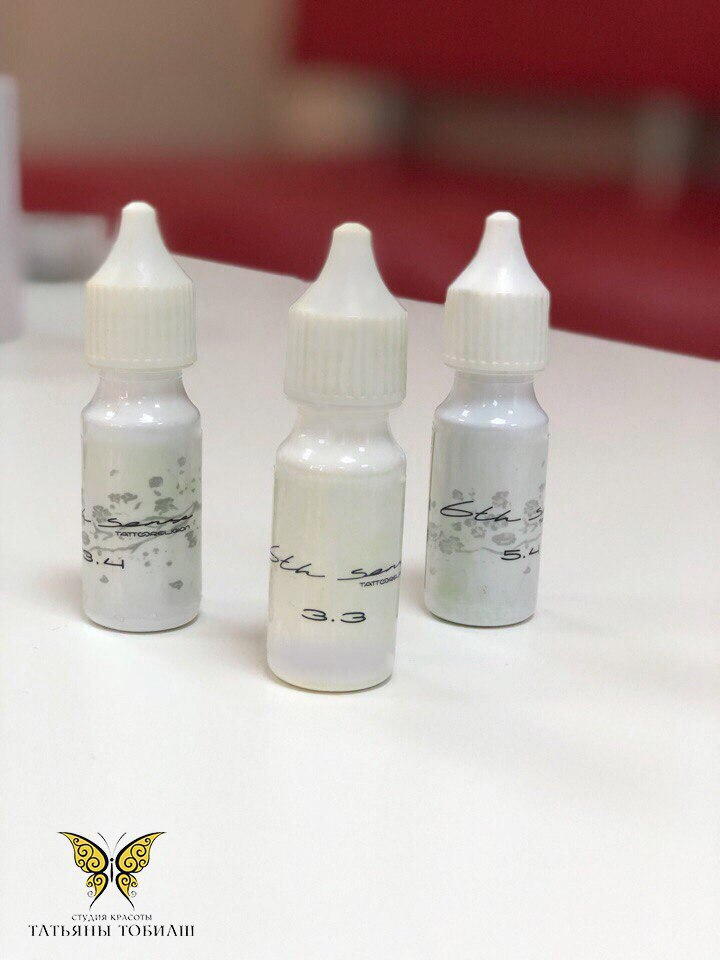
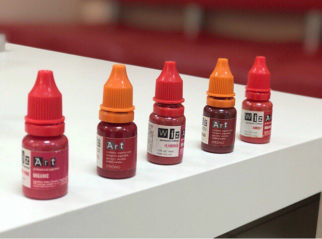
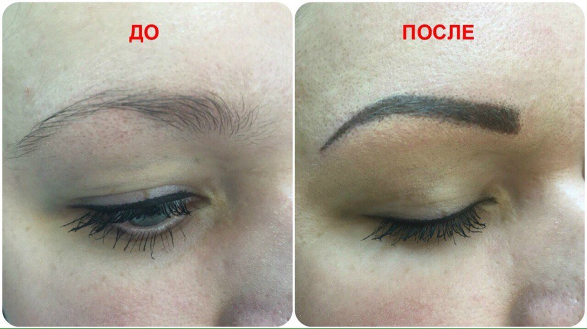
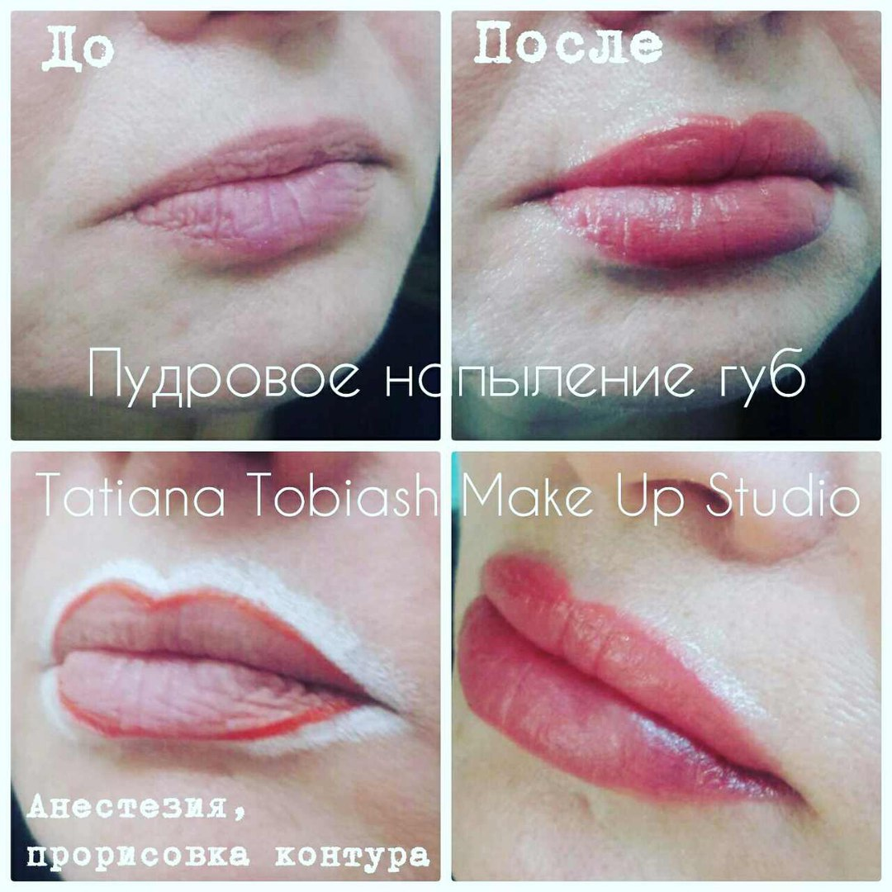